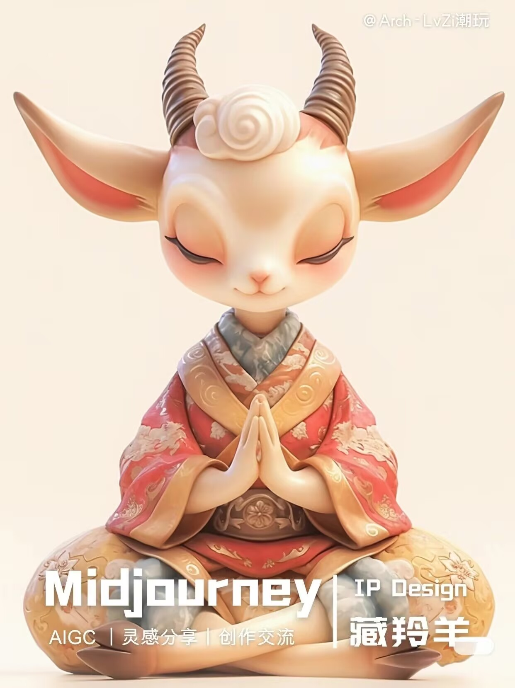
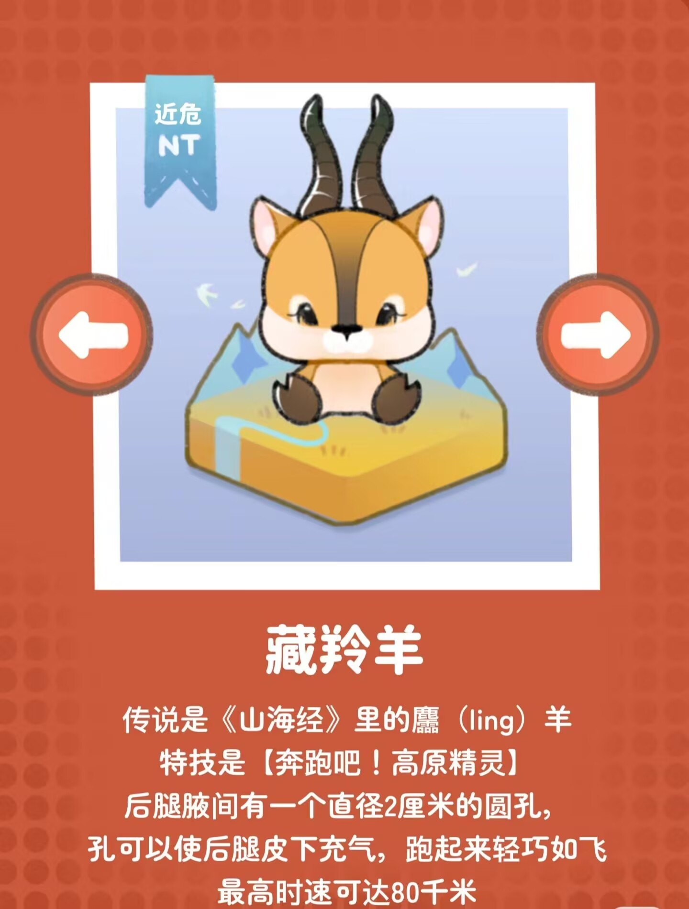
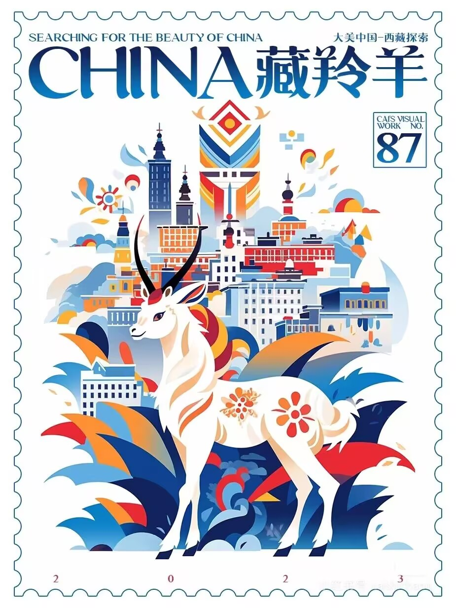

藏羚羊想对你说：
“我们是青藏高原的骄傲，我们的迁徙是自然奇观，我们的绒毛是自然赋予。我们的生存已经因为恶劣的环境而变得艰难，请不要让我们因为你们的私欲而走向灭绝。” |
 |

形态特征：
藏羚是偶蹄目、牛科、藏羚属的哺乳动物。体长120-140厘米，尾长14-16厘米，肩高65-70厘米。雄性有直而细长的角，长约55-62厘米，近基部有明显的横棱。雌性略小。该物种头形宽长，吻部粗壮，鼻部宽阔略隆起，鼻腔二侧鼓胀，呈半球状。背毛厚密。上体淡棕褐色，颈下、胸、腹和四肢内侧均白色。
🗺️分布范围：
分布在我国以羌塘为中心的青藏高原地区。
🏞️栖息环境：
栖息于海拔3700-5500米的高山草原、草甸和高寒荒漠地带，早晚觅食，善奔跑。可结成上万只的大群。夏季雌性沿固定路线向北迁徙。由于常年处于低于零度的环境，通体被厚密绒毛。食物以禾本科和莎草科植物为主，冬季则啃食干草茎和枯叶，忍耐干旱的能力较强，大多数时间是通过植物和雪获得水分。
📃保护现状：
列入《世界自然保护联盟濒危物种红色名录》(IUCN)濒危物种红色名录ver3.1
2008年——濒危(EN)
2016年——近危(NT)
❓濒危原因：
（1）人类和饲养的家畜对藏羚的侵犯，人类活动对藏羚迁徙和活动的干扰，以及对藏羚栖息地的侵占。
（2）偷捕滥杀藏羚及走私藏羚毛皮或毛原料。 |